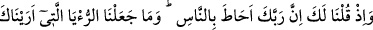
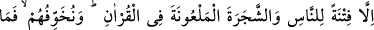
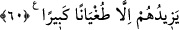

sürece Allah mü’minlere azâb etmez. Cehennem onlara şöyle der: “Geç ey mü’min!
Senin nûrun benim nârımı/ateşimi söndürdü.”[112] Eğer bazı günahkarlar cehenneme
girerse bu onların temizlenmeleri, hâlis olmaları içindir, ebedî kalmaları için değildir.
60. Hani sana: “Rabbin, insanları çepeçevre kuşatmıştır.” demiştik. Sana
gösterdiğimiz rüyayı ve Kur’an’da lânetlenen ağacı, ancak insanları sınamak için
meydana getirdik. Biz onları korkuturuz da, bu onlara, büyük bir azgınlıktan başka
bir şey sağlamaz.
“Hani sana: “Rabbin, insanları çepeçevre kuşatmıştır.” demiştik” Allah’ın insanları
ilim ve kudretçe kuşattığımızı ve insanların Allah’ın kabzasında/kudret elinde
bulunduğunu vahyettiğimizi hatırla. İşine devam et ve hiçbir kimseden korkma!
Büyüklerden birisi şöyle demiştir: Ârifler nezdinde Allah’ın bütün varlıkları
çepeçevre kuşatması, O’nun mevcûdatın sûretleri ile tecellî etmesinden ibarettir. Allah
Teâlâ, tüm isimlerinin ahadiyyeti/birliğiyle zât, hayat, ilim ve kudret gibi sıfatlarla
varlıkların hepsine sirâyet edicidir. Allah Teâlâ’nın ihâta ve kuşatmasından maksad işte
bu sirâyettir. Gökyüzündeki ve yeryüzündeki hiçbir zerre ondan uzak kalmaz. Ondan
uzak kalan her şey ise yokluğa ulaşır. Bâzı kimseler bu ihâtanın kabın içinde olan şeyi,
bütünün cüzlerini veya küllî olanın parçalarını kuşatması gibi olmadığını, aksine
melzûmun (zorunlu olanın) lâzımını (kendisi için gerekli, lüzumlu olanı) kuşatması gibi
olduğunu söylemişlerdir. Çünkü Allah Teâlâ’nın mutlak zâtına sonradan katılan
taayyünât ancak O’nun vâsıta ile veya vâsıtasız, şartlı veya şartsız levâzımıdır
(gerekleridir). Levâzımın çokluğu melzûmun birliğine zarar vermez ve onunla da
çelişmez.
“Sana gösterdiğimiz rüyâyı ve Kur’an’da lânetlenen ağacı, ancak insanları
sınamak için meydana getirdik.” Buradaki rü’ya ile kasdedilen Hz. Peygamber (s.a.)’in
mi‘rac gecesi yeryüzünün ve gökyüzünün şaşırtıcı hallerini görmesidir. Bu tür şeylere
rü’ya denilmesi ya rü’ya ile rü’yet/görme arasında bir fark olmamasındandır. Nitekim
el-Kevâşî’de rü’yanın uyku hâlinde de görme gibi uyanıkken de olacağı söylenir. Ya da
mi’rac geceleyin kısa sürede tamamlandığı için sanki uyku/rüya gibi olduğu için rü’ya
denilmiştir. Bir üçüncü ihtimal ise kâfirler mi‘rac hakkında “Belki de bir rü’yadır.”
dedikleri için inkâr edenlerin sözüne atıfta bulunularak rü’ya denilmiştir.
Sa’dî Çelebi Hâşiyesi’nde şöyle denilir: “Bazen rü’yada görülmeye daha uygun olan
harikulade şeyler normal hayatta gerçekleştiği zaman teşbih ve istiâre yoluyla onlara
rü’ya denilir.” Yâni, mi‘rac gecesi sana apaçık gösterdiğimiz rü’yayı -ki aslında o en alt
seviyede basîrete sahip kimselerin bile doğruluğundan şüphe edemeyeceği gerçekten